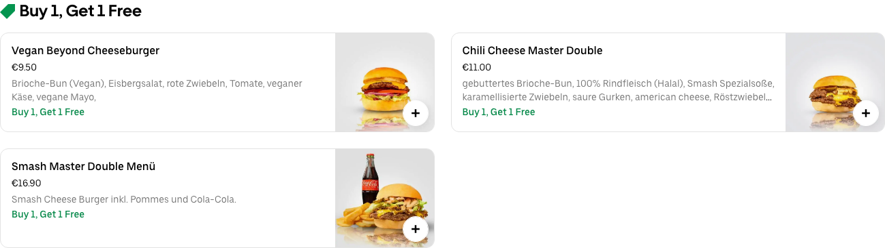
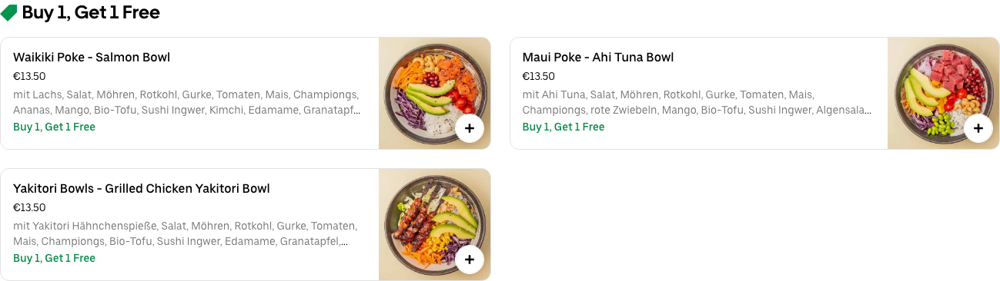
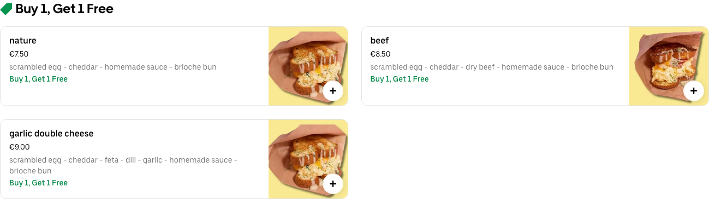
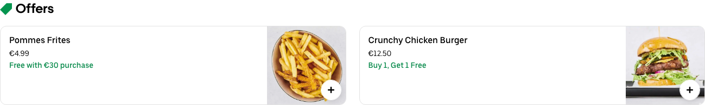
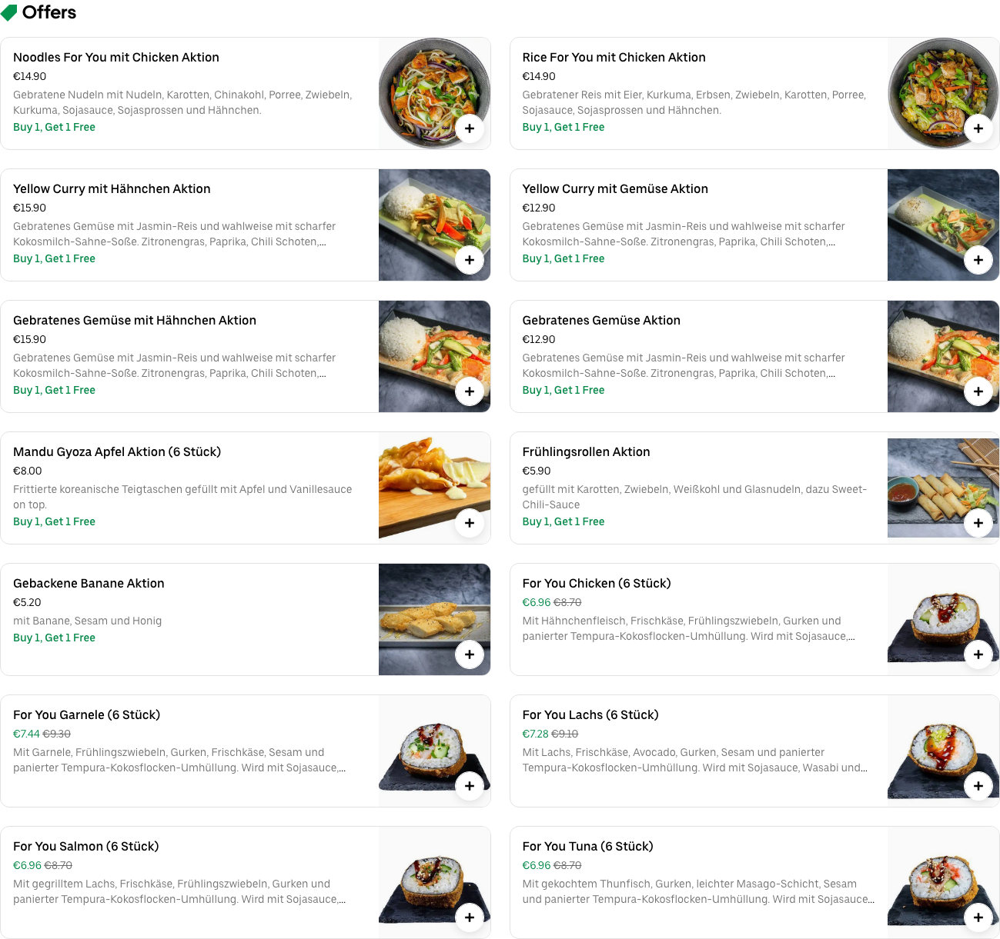
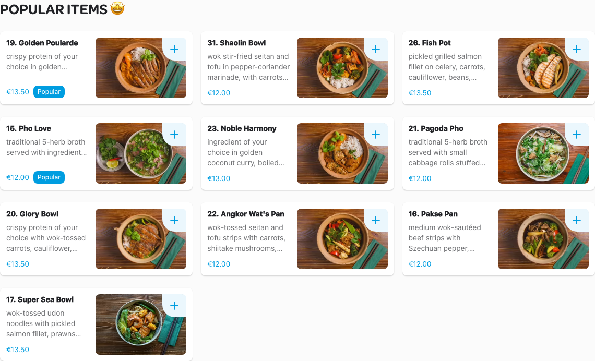
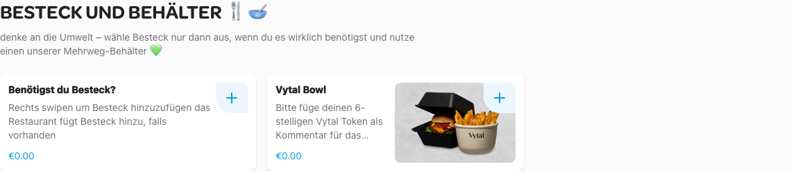
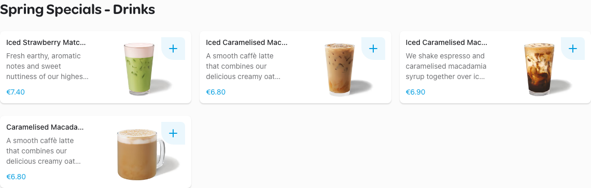
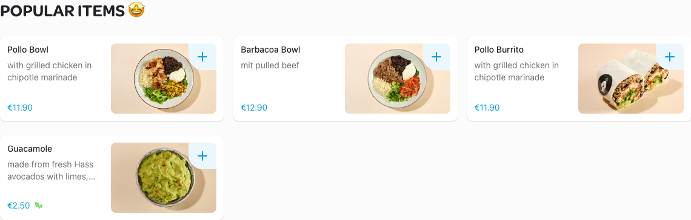

Schnitzery

Smash Master Warschauer
Lang Van - Vietnamesisches Restaurant

The Hummus Club

Crispy's Chicken 🍗🐔 Friedrichshain

Sushi Yana - Friedrichshain

Adana Grillhaus

Zushii-Sushi & Bowls

Ali Baba Burger

Sushi Moto

Little Italy

SUN POKE BOWL
EGGDROP 35
Ali Baba Libanesische Küche

Mr. Kawayashis Beef Boutique

Lookma Berlin Kreuzberg

EGGDROP 82

Three dudes next door
Sushi for You Friedrichshain
Tabibito

Zia Maria - Friedrichshain

Hühnerhaus36

Fam. Tran

Burgeramt Imbiss

BBI - BerlinBurgerInternational

Chicken Buzz X-Berg

Marthas Delicious Burgers

HaiCoffee

District Mot

Beyond Ramen

Goldies

Bao Burger by District Mot

Silom - Bangkok Street Food

Adana Grillhaus

Kebap with Attitude

Cicer - The World of Chickpea

Mikoto Sushi - Kreuzberg

Cargo Gastronomia

Domino's Pizza Berlin Frankfurter Tor

HINDI Indisch Restaurant

Zerostress Pizza & Restaurant - Friedrichshain

Umami Kreuzberg
Zensation Restaurant

Crunchy Shawarma

BURGER KING® Prenzlauer Berg

No Hablo Español

TAT Restaurant

Standard Serious Pizza - Kreuzberg

Pizza Dach

Vincent Vegan Friedrichshain
Pizzaria Crunchy

Starbucks Bahnhof Warschauer Str.
Circle & Slice

Möllers Köttbullar Kreuzberg

Chicken Buzz X-Berg
VEG'D – Vegan Burger (F-Hain)

Chupenga - Burritos & Salads Muehlenstr.
The Hummusapiens

Chay Village Friedrichshain

{{lieferando}}